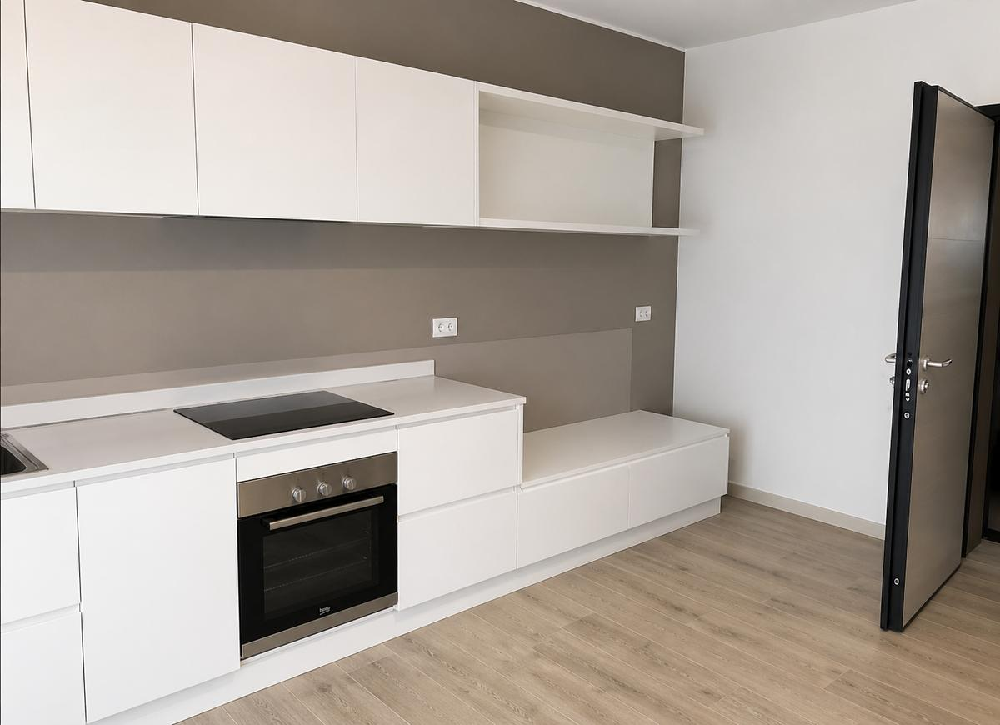

Sopralluogo gratuito
Ristrutturazioni
Rinnoviamo case, uffici e negozi. Ti aiutiamo a scegliere soluzioni, materiali e finiture e seguiamo il cantiere dall’inizio alla fine, con un solo riferimento.
A partire da
4.000 € IVA inclusa
Rinnovo di un bagno piccolo con finiture Base, impianti invariati. Materiali e finiture li scegliamo insieme al sopralluogo.
Come lo facciamo
- Passo 1:Sopralluogo Veniamo a vedere gli spazi, prendiamo misure e foto e ascoltiamo cosa vuoi ottenere.
- Passo 2:Progetto e preventivo Definiamo insieme lavori, materiali e finiture. Ricevi un preventivo scritto, voce per voce, con le fasi del cantiere.
 Passo 3:Lavori in cantiere Demolizioni, muri, impianti e pavimenti, coordinati da noi. Proteggiamo ciò che resta e teniamo il cantiere in ordine.
Passo 3:Lavori in cantiere Demolizioni, muri, impianti e pavimenti, coordinati da noi. Proteggiamo ciò che resta e teniamo il cantiere in ordine.
Passo 4:Finiture e consegna Montiamo, puliamo e controlliamo ogni dettaglio con te prima di consegnarti gli spazi.
Cosa facciamo
- Bagni completi
- Cucine
- Case e appartamenti interi
- Uffici, negozi e locali
- Cartongesso e controsoffitti
- Pavimenti e rivestimenti
- Facciate, tetti ed esterni
- Impianti coordinati con professionisti abilitati